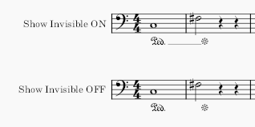
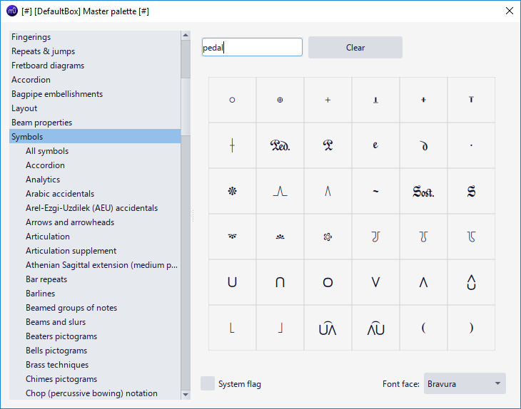
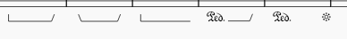
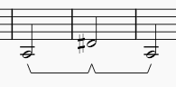
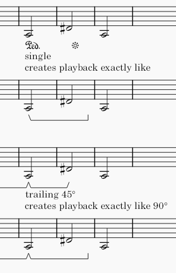
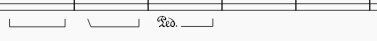
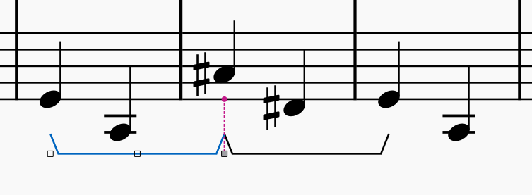
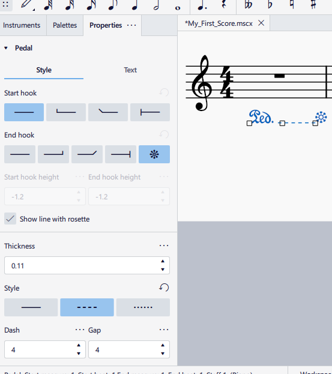

踏板
有关竖琴踏板，请改见惯用记谱法：竖琴。
踏板标记的类型
本章重点介绍可用的钢琴踏板制谱类型，有关各种钢琴踏板的知识，请参阅维基百科文章。
就视觉表现而言
支持的制谱包括：
- 在一端或两端有线，无钩或以 45 度或 90 度角带钩，或“T”形端；
- Ped. 后跟这样的线，或花形符号（*）：内置 Ped. * 面板项目中的线是不可见且不打印的。使用 视图菜单 > 显示 > 显示不可见项 设置相应地调整屏幕显示，见用户界面。要将该线转换为打印时可见，或将其样式设为虚线，见属性。\

- 其他相关符号和象形符号可以在 主面板 窗口的 符号 类别下找到，见其他符号。Sost.（持音踏板）标记不应与 sost.-- 速度标记混淆，另见steinberg.net 上的讨论。\

就 MuseScore 内部功能而言
有三种不同的子类型：
类型 1 包括：\

- 带 45 度 角 端钩 或 无端钩 的线，带或不带 Ped. 起始文字。
- Ped. 后跟花形符号（*）
在视觉上，线或符号仅水平延伸到附着在 结束锚点 上的符头。\ 在功能上，如果该音符附着在另一个标记的 起始锚点 上，后续标记会自动连接，形成类似“-^-”的形状，这表示钢琴技巧 “踏板松开后立即重新踩下，同时不松开该音符”。\

上面所示的是自动连接，它们的播放也与钢琴技巧一致。 如果乐器使用 [SoundFonts](../../sound-and-playback/soundfonts.md)（如“MS Basic”），或者导出为 MIDI 文件时，会产生延音（MIDI CC 64）。当连续的类型 1 标记形成“-^-”时，播放与钢琴技巧相符，第一个标记被合成器解释为在附着于 结束锚点 的音符处释放。 单个或尾随的类型 1 标记产生的播放类似于类型 2：持续到附着于 结束锚点 的音符结束。\

上面所示的最后两个类型 1 标记是单个或尾随的，它们产生与类型 2 相同的播放。
类型 2 包括：\

- 类型 1 中所述以外的线，带或不带 Ped. 起始文字。
在视觉上，线水平延伸到适当长度，跨越附着在 结束锚点 上音符的完整时值。\ 在功能上，如果乐器使用 SoundFonts（如“MS Basic”），或者导出为 MIDI 文件时，会产生延音（MIDI CC 64）。类型 2 始终持续到附着于 结束锚点 的音符结束。
类型 1 和类型 2 可通过调整属性互换。
类型 3 包括持音踏板标记和自定义谱表文本，它们仅用于制谱目的，不具有功能。
将踏板标记添加到你的乐谱

上面所示的是乐谱上的一个类型 2 标记。
从 线 面板添加踏板标记，见其他线：将线添加到你的乐谱。
使用 Shift+Left/Right 调整，使用 Tab 切换手柄，见直接调整元素：更改线的范围。
遗憾的是，如果你必须创建所需的播放效果，你可能需要在制谱风格上做出妥协，或者干脆不记谱，因为上文解释的类型 1 和类型 2 的功能限制。截至 MuseScore 4.1.1，踏板标记始终只产生延音播放（不能关闭），因此不可能使用“添加冗余符号并使其不可见”的技巧。
要使用连续的类型 1 标记创建类似“-^-”的形状，请确保 结束锚点 正确附着，通常是附着在 下一个小节的第一个音符 而不是上一个小节的最后一个音符。这张大图显示了正确的 结束锚点 结果。\

MuseScore 4.1.1 不为面板项目提供键盘快捷键绑定；MuseScore 3 中可用于重新应用相同（最近使用的）面板项目的键盘快捷键已被移除（尚未重新实现）。
创建踏板更换
请勿与竖琴踏板更换混淆
使用类型 1 标记，如“添加标记”部分所述。\ 有关 MusicXML 方向导入/导出的问题，MuseScore 4.2 中有即将到来的更改，见论坛讨论 https://musescore.org/en/node/356899 [欢迎随时更新此处的信息]
踏板属性
选中踏板标记，在属性面板的踏板部分中，可以设置线属性；踏板标记可用的额外选项是 样式 选项卡下的 “显示带花形的线” 复选框，勾选它可使默认线在打印和导出中可见。

踏板样式
“踏板样式”的值可在 格式→样式→踏板 中编辑。\ “踏板内部文字样式”的值可在 格式→样式→文字样式→踏板 中编辑。\ 另见线样式。